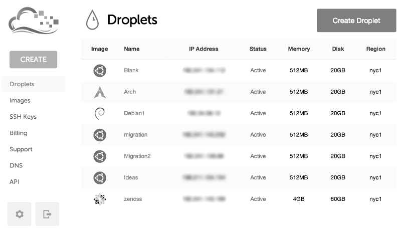

Useful bit of SQL to update many records in SugarCRM
UPDATE clowns SET deleted=1 WHERE id IN (SELECT id FROM ( SELECT id FROM clowns WHERE deleted = 0 ORDER BY id ASC LIMIT 0, 800) tmp );
UPDATE clowns SET deleted=1 WHERE id IN (SELECT id FROM ( SELECT id FROM clowns WHERE deleted = 0 ORDER BY id ASC LIMIT 0, 800) tmp );
Basically, the unit test pushed out something which I realised was a code smell, because I was writing a bunch of stuff into a controller function that really should’ve been in a controller I was having a really painful time writing a unit test for it. For example these …

So before you can move to your own self-hosted services, you’ll need your own hosting. This is a really basic tutorial/set of links on getting a server up and running with Salt.
DigitalOcean is a terrific hosting company if you’re want to play around with …

As Lance Armstrong has shown the world, putting the right thing into your body can greatly improve performance, I myself have been looking into more maintainable alternative. More and more I’m experimenting with diet as a means to improve my mental performance as well as my running ability week …